The function boxplotSCI() generates boxplots of a
variable of interest (such as a quality of life score, for example) for
one time point or over time for one or two groups.
Setup and data
To demonstrate the various functionalities, we will use the dataset
summarySCI::hemoglobin_data.
library(summarySCI)
data(hemoglobin_data)
hemoglobin <- hemoglobin_dataThe dataset hemoglobin contains the hemoglobin values of
169 patients at 9 different time points. The time points in the column
visit_nr are coded as numeric, while the time points in
column visit are coded as factor. The column
Arm indicates whether the patient was in Arm A
or Arm B.
head(hemoglobin)
#> ID Arm visit visit_nr hb
#> 1 ID1 Arm B Cycle 9 9 132
#> 2 ID1 Arm B Cycle 8 8 130
#> 3 ID1 Arm B Cycle 7 7 135
#> 4 ID1 Arm B Cycle 6 6 140
#> 5 ID1 Arm B Cycle 5 5 139
#> 6 ID1 Arm B Cycle 4 4 138Basic boxplots for two groups
boxplotSCI(data = hemoglobin,
var = hb,
order = visit_nr,
group = Arm,
main = "Boxplots for the two groups",
legend_position = "topleft")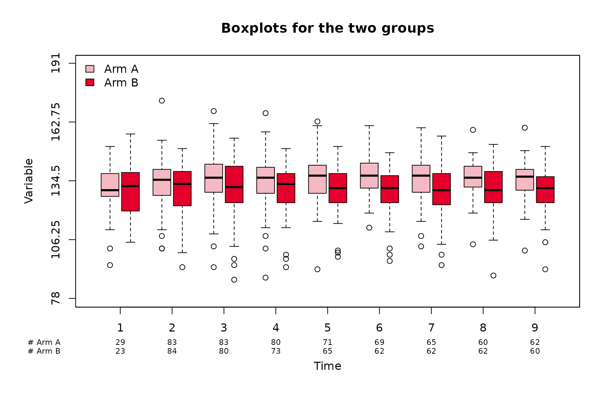
Now let us imagine that we want the order of the treatment groups to be reversed.
hemoglobin$Arm <- factor(hemoglobin$Arm, levels = c("Arm B",
"Arm A"))
boxplotSCI(data = hemoglobin,
var = hb,
order = visit_nr,
group = Arm,
main = "Reversed treatment order",
legend_position = "topright")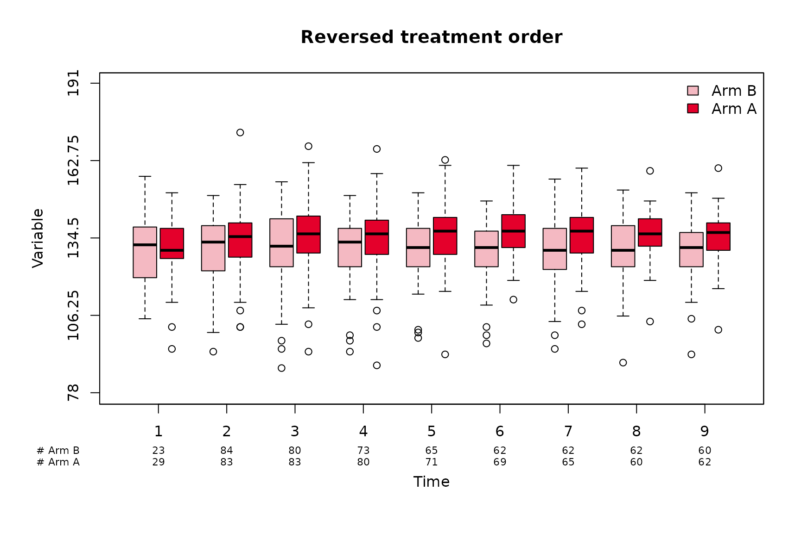
Group names
The names of the two groups can be customized using
group_names (for the legend) and
group_names_short for the x-axis. The order in
group_names and group_names_short must match
the order of levels(factor(data$group))
# back to original order
hemoglobin$Arm <- factor(hemoglobin$Arm, levels = c("Arm A",
"Arm B"))
boxplotSCI(data = hemoglobin,
var = hb,
order = visit_nr,
group = Arm,
group_names = c("Treatment (Arm A)", "Control (Arm B)"),
group_names_short = c("A", "B"),
main = "Customization of group names",
legend_position = "topright")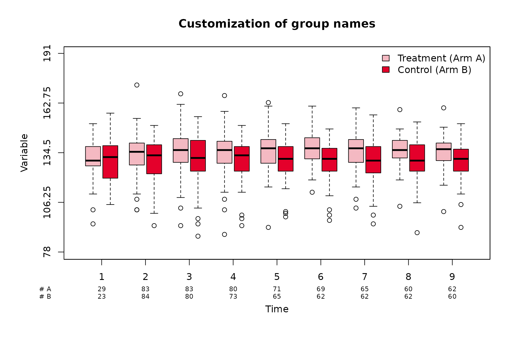
One group
The function can also be used when there is only one group.
boxplotSCI(data = hemoglobin[hemoglobin$Arm == "Arm A", ], # Only treatment
var = hb,
order = visit_nr,
main = "Only treatment group")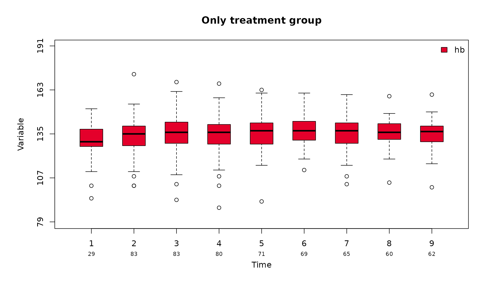
Time points as factors
The function also accept time points given as factors. In this case, the user needs to make sure that the factor is correctly ordered.
hemoglobin$visit <- factor(hemoglobin$visit,
levels = c("Cycle 1", "Cycle 2", "Cycle 3",
"Cycle 4", "Cycle 5", "Cycle 6",
"Cycle 7", "Cycle 8", "Cycle 9"))
boxplotSCI(data = hemoglobin,
var = hb,
order = visit,
group = Arm,
group_names = c("Treatment (Arm A)", "Control (Arm B)"),
group_names_short = c("A", "B"),
main = "Time points as factor",
legend_position = "topleft"
)
Another equivalent alternative is to put the numeric time points in
order and the labels in visit.
boxplotSCI(data = hemoglobin,
var = hb,
order = visit_nr,
visit = visit,
group = Arm,
group_names = c("Treatment (Arm A)", "Control (Arm B)"),
group_names_short = c("A", "B"),
main = "Time points as factor",
legend_position = "topleft"
)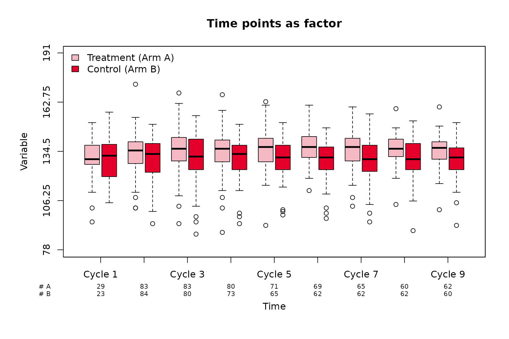
Customization of the boxplots
Legend
The position and size of the legend can easily be adapted using the
arguments legend_position and legend_cex,
respectively. A box can be added around the legend using
legend_bty = "o".
boxplotSCI(data = hemoglobin,
var = hb,
order = visit_nr,
group = Arm,
# short names
group_names = c("Treatment (Arm A)", "Control (Arm B)"),
group_names_short = c("A", "B"),
# Title
main = "Hemoglobin over time",
# Legend position
legend_position = "bottomright",
# Legend size
legend_cex = 0.75,
# Legend box
legend_bty = "o"
)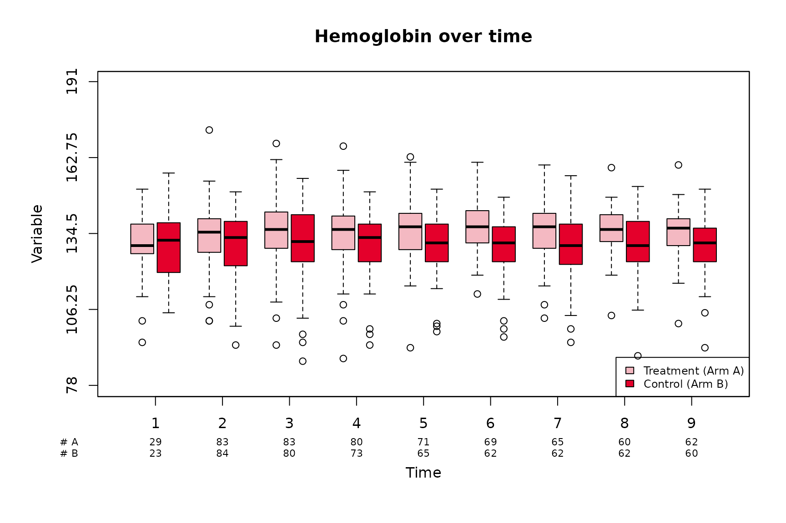
Size and color of boxes
The color and size of the boxes can be customized using the arguments
col and boxwex. The distance between the boxes
(when two groups are compared) can be adjusted with the argument
shift.
boxplotSCI(data = hemoglobin,
var = hb,
order = visit_nr,
group = Arm,
# short names
group_names = c("Treatment (Arm A)", "Control (Arm B)"),
group_names_short = c("A", "B"),
# Title
main = "Hemoglobin over time",
# Col of boxes
col = c("lightblue", "orange"),
# Width of boxes
boxwex = 0.2,
#Space between boxes
shift = 0.15,
# Legend position
legend_position = "topleft",
)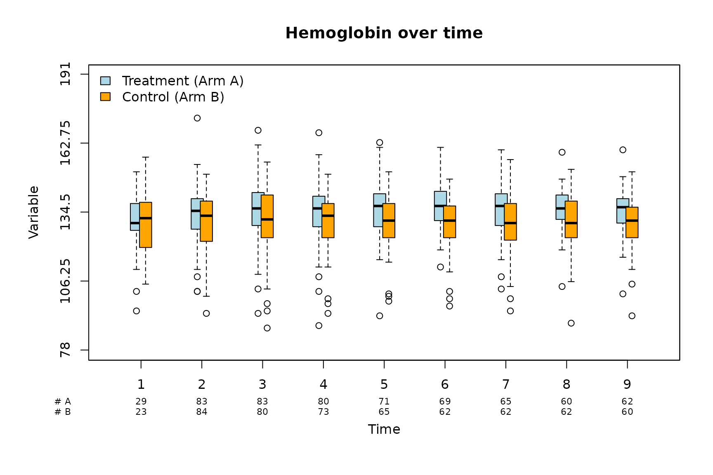
Axes
Various parameters related to the axes can be customized using
xlab, ylab, cex_lab,
cex_axis, ylim and y_ticks.
par(las = 1)
boxplotSCI(data = hemoglobin,
var = hb,
order = visit_nr,
group = Arm,
group_names = c("Treatment (Arm A)", "Control (Arm B)"),
group_names_short = c("A", "B"),
# Title
main = "Hemoglobin over time",
# X axis label
xlab = "Visits",
# X axis position
xlab_position = 0,
# Y axis label
ylab = "Score",
# Size of axis labels
cex_lab = 1.2,
# Size of axes
cex_axis = 1.1,
# Size of number of patients
cex_n_patients = 0.9,
# Y axis limit
ylim = c(80, 200),
# Y axis ticks
y_ticks = seq(80, 180, by = 10),
legend_position = "topleft"
)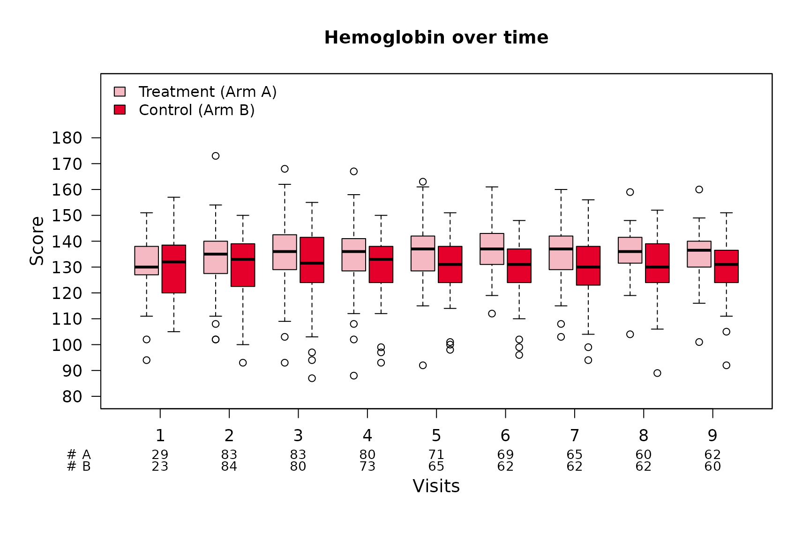
Lines and colors
Lines can be added using lines and their color and type
specified using col_lines and lty,
respectively.
boxplotSCI(data = hemoglobin,
var = hb,
order = visit_nr,
group = Arm,
group_names = c("Treatment (Arm A)", "Control (Arm B)"),
group_names_short = c("A", "B"),
# Title
main = "Hemoglobin over time",
# Col of boxes
col = c("lightblue", "orange"),
# X axis label
xlab = "Visits",
# X axis position
xlab_position = 0,
# Y axis label
ylab = "Score",
lines = c(90, 120, 160),
# Col of lines
col_lines = c("red", "grey", "red"),
# Type of lines
lty = c(2, 3, 2)
)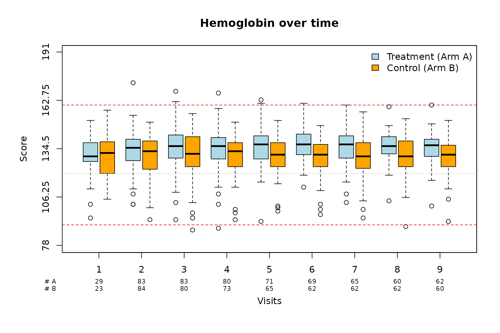
Special case: only one time point
The function also works if no intput is provided for
order or if order only contains one time
point.
par(las = 1)
boxplotSCI(data = hemoglobin[hemoglobin$visit_nr == 4, ],
var = hb,
# order = visit_nr,
group = Arm,
main = "Only one time point"
)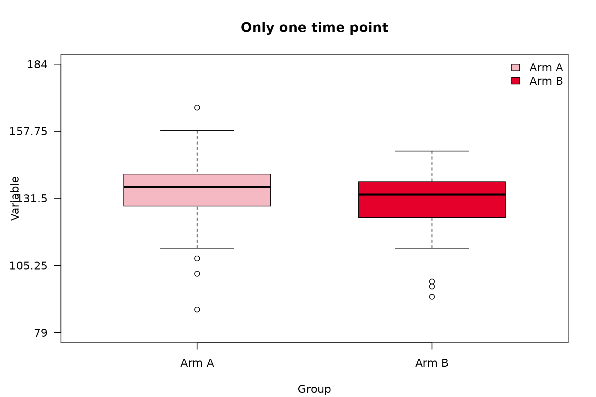
Time point is missing for one group
The function also works if one (or more) time points are missing for
one of the groups. The argument missing_nr controls what
should be displayed for the number of patients for the missing time
point. Default to 0. For example, let us assume that there
is no hemoglobin value for the patient in the Arm A group
at time point 8:
hemoglobin_2 <- hemoglobin[!(hemoglobin$Arm == "Arm A" & hemoglobin$visit_nr == 8), ]
# numeric
boxplotSCI(data = hemoglobin_2,
var = hb,
order = visit_nr,
group_names = c("Treatment (Arm A)", "Control (Arm B)"),
group_names_short = c("A", "B"),
group = Arm,
main = "Boxplots for the two groups",
legend_position = "topleft",
missing_nr = 0)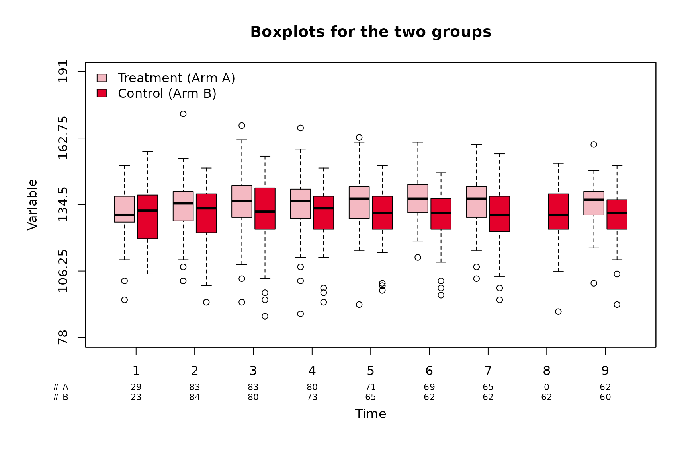
Now let us imagine that there is no hemoglobin value for the patients
in the Arm B group after timepoint 4:
hemoglobin_3 <- hemoglobin[!(hemoglobin$Arm == "Arm B" & hemoglobin$visit_nr > 4), ]
# numeric
boxplotSCI(data = hemoglobin_3,
var = hb,
order = visit_nr,
group_names = c("Treatment (Arm A)", "Control (Arm B)"),
group_names_short = c("A", "B"),
group = Arm,
main = "Boxplots for the two groups",
legend_position = "topleft",
missing_nr = NA)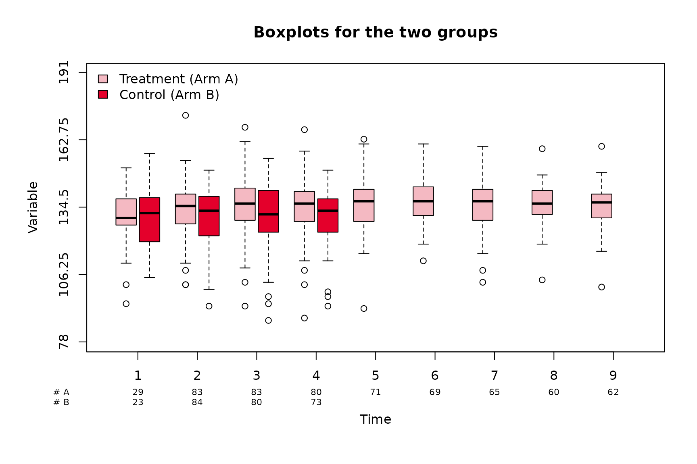